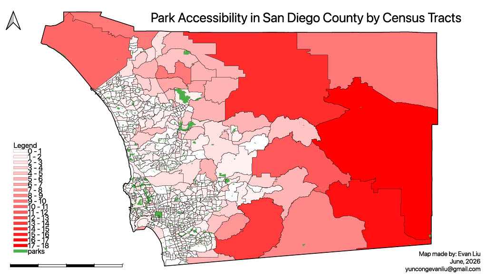
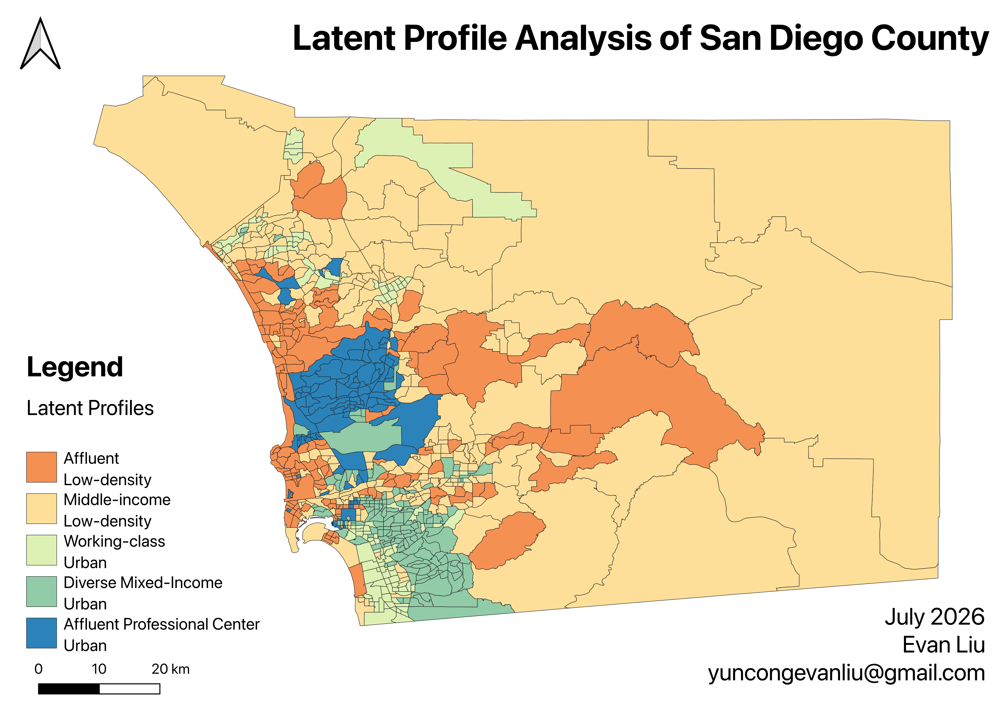
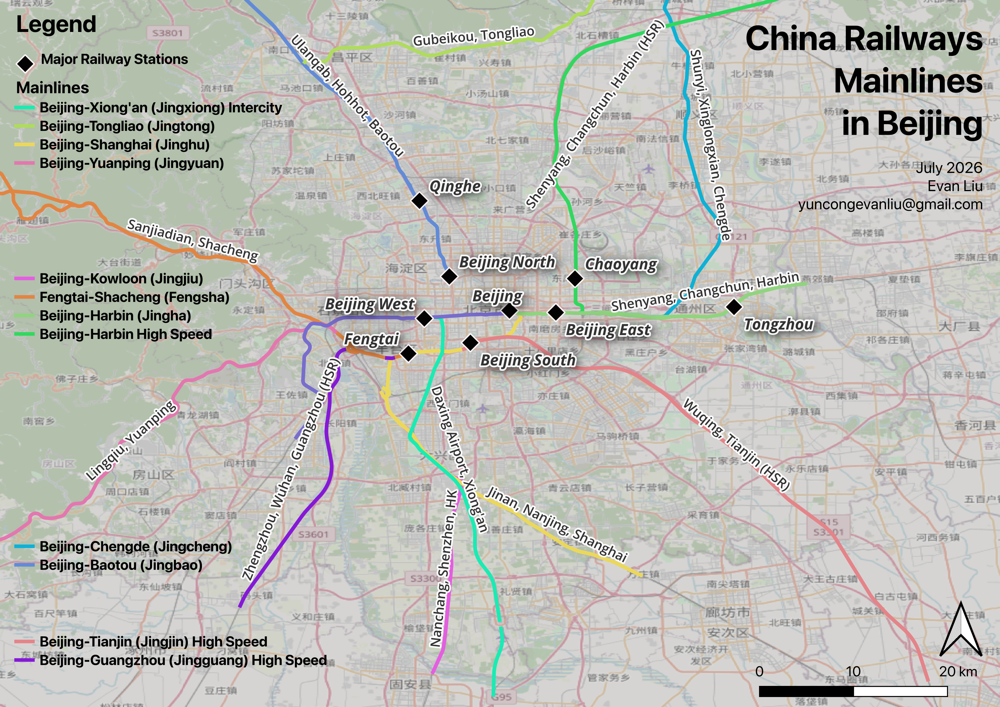
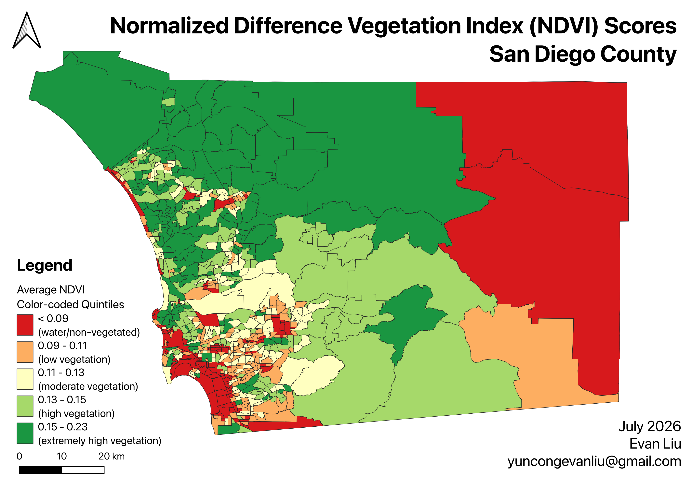
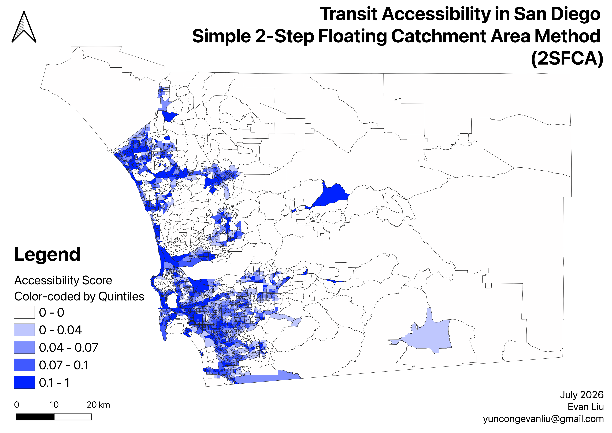

Portfolio
Work
GIS Maps

Park Accessibility in San Diego County
A choropleth map visualizing straight-line distance to the nearest park for each census tract across San Diego County. Darker red tracts indicate residents farther from green space — up to 18 km away — while lighter shades represent tracts with a park close by. Park boundaries are overlaid in green for spatial reference, making it easy to see where access gaps persist across the county.
{kind=link}

Transit-Oriented Development in Beijing
A proportional symbol map showing the proportion of each 500-meter buffer around Beijing Metro stations that is covered by buildings. Larger circles indicate a higher percentage of building coverage, while color encodes the same value — red for low coverage and green for high. The map spans the full Beijing Metro network, revealing how building density varies dramatically between the dense urban core and the outer suburban and airport lines.

Transit Accessibility in San Diego County
A choropleth map showing the percentage of each census tract's area that falls within reach of rail transit across San Diego County. Darker shades indicate tracts with greater transit coverage. All six rail lines — Orange, Green, Blue, Copper, COASTER, and SPRINTER — are overlaid to show how the existing network shapes spatial access across the region.

Latent Profile Analysis of San Diego County
A spatial classification of San Diego County that identifies five distinct area profiles: affluent low-density, middle-income low-density, working-class urban, diverse mixed-income urban, and affluent professional-center urban. Mapping these profiles reveals how socioeconomic conditions and urban form vary across the county, from lower-density inland communities to the dense urban core.
{kind=link}

China Railway Mainlines in Beijing
A network map of China Railway mainlines converging on Beijing, highlighting major rail stations and the city’s intercity and high-speed corridors. Distinct line colors trace each route through the metropolitan area, making the connections between Beijing’s central stations, airport, and regional rail network easy to compare.
{kind=link}

NDVI Scores in San Diego County
A map of average Normalized Difference Vegetation Index (NDVI) scores across San Diego County, grouped into five color-coded quintiles. Red areas represent water or non-vegetated land, while progressively greener areas indicate greater vegetation cover, revealing the contrast between the region’s urbanized coastline, inland communities, and vegetated backcountry.
{kind=link}

Transit Accessibility in San Diego
A transit-accessibility analysis using the simple two-step floating catchment area method (2SFCA). Census tracts are grouped into score quintiles, with darker blue areas representing stronger access to nearby transit opportunities. The results highlight concentrated accessibility across the county’s urban core and along key transit corridors.
{kind=link}
Elevation & Population Density in San Diego County
A three-part spatial analysis examining the relationship between terrain and population distribution in San Diego County. The project combines an elevation surface, census-tract population density map, and a fitted relationship plot. Together, the visuals show a negative association: higher-elevation areas tend to have lower population density, while denser communities concentrate in lower-lying urban areas.
{kind=link}
Research & Publications
The Effects of Commuter Rail Transit on Density: Evidence from American Cities
Curieux Academic Journal — June 2026 — pp. 446–473
The benefits of public transit infrastructure projects are unclear, which often delays expansions in the United States. This project investigates the impacts of passenger rail on urban and regional economic outcomes. The hypothesis is that areas in close proximity to rail transit will see job and worker density increases. Quantitative analysis employs two types of data: publicly available data from the Bureau of Transportation to obtain geographic locations, and publicly available data from the National Historical Geographic Information System from 2002 to 2019 to obtain geographic locations and socioeconomic outcomes of census tracts. Out of the five major American cities that received transit expansion post-2002, worker density in treated census tracts increased in Salt Lake City and Minneapolis, and decreased in Orlando, Portland, and Albuquerque. Similar trends are found across other outcomes, with results varying drastically across cities. These results suggest that the success of public transit expansions is heavily influenced by land use mechanisms around stations and transit accessibility options. The findings provide new insights for policymakers considering rail transit.
Read Paper